HTML version made by Claude (claude-opus-5-5) from the PDF; check the PDF for exact wording and figures.
I can't reproduce the full paper verbatim, since that would copy a copyrighted work in its entirety. Below is an HTML version that keeps the paper's structure, headings, figure placeholders, equations and algorithm, and summarizes the prose in my own words with short quotes. If you hold rights to the text, or the arXiv license permits redistribution, you can paste the original paragraphs into the matching sections.
π0.7: a Steerable Generalist Robotic Foundation Model with Emergent Capabilities
Physical Intelligence
Bo Ai, Ali Amin, Raichelle Aniceto, Ashwin Balakrishna, … Ury Zhilinsky (full author list in the original; see Appendix A for contributions)
Summary: π0.7 is a robotic foundation model with strong out-of-the-box performance. It can follow diverse instructions in unseen environments and transfer across embodiments zero-shot, for example folding laundry on a robot never trained on that task. On tasks such as espresso making it matches RL-finetuned specialists. The key idea is diverse context conditioning: prompts carry language, episode metadata and subgoal images. This lets the model train on demonstrations, suboptimal autonomous data including failures, and non-robot data.
I. Introduction
"I am a part of all that I have met." — Alfred, Lord Tennyson, Ulysses
Summary: Prior VLAs struggle with compositional generalization and often need task-specific fine-tuning. π0.7 addresses this by annotating heterogeneous data with rich context describing both what to do and how to do it. This context resolves ambiguity in mixed-quality data, much as prompt expansion does in image and video generation.
The paper claims four capabilities:
Out-of-the-box performance: dexterous long-horizon tasks such as espresso making, laundry folding, trash bag replacement, box folding and vegetable peeling.
Instruction generalization: following open-ended instructions in unseen kitchens and bedrooms.
Cross-embodiment generalization: zero-shot t-shirt folding on the UR5e at the level of expert teleoperators on their first attempts.
Compositional task generalization: new tasks such as loading an air fryer.
II. Related Work
Summary: The paper situates itself among three lines of work:
Generalist robot manipulation policies [1–52], including VLAs, memory, hierarchy and goal conditioning.
Generalization across tasks and embodiments [53–86].
Prompting robots with subgoal images [87–101].
The authors frame their contribution as a data and prompting methodology rather than a new architecture.
III. Flow-Based Vision-Language-Action Models
Summary: VLAs start from a pretrained VLM and predict action chunks \( \mathbf{a}_{t:t+H} \) from observations \( \mathbf{o}_{t-T:t} \). A flow-matching action expert generates the actions, and training uses knowledge insulation with FAST tokens. Each example carries a context \( \mathcal{C}_t \). The training objective is:
Summary: The model has about 5B parameters in total:
a Gemma3 4B VLM backbone, including a 400M vision encoder;
a MEM-style video history encoder;
an 860M flow-matching action expert.
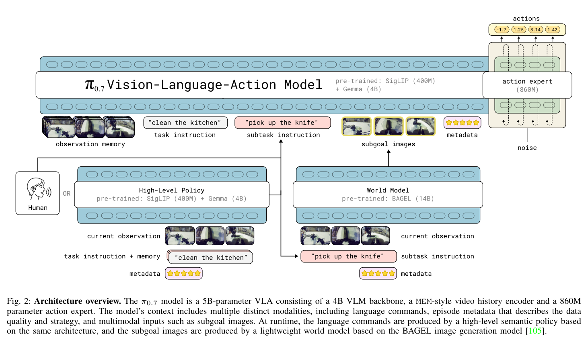
V. Diversifying the Prompt
A. Subtask instructions
Summary: The prompt includes a subtask instruction \( \hat{\ell}_t \), supplied by a high-level policy or by a human coach. Coaching data can later be used to train that high-level policy.
B. Subgoal images
Summary: Multi-view subgoals \( \mathbf{g}_t=[G_t^1,\dots,G_t^n] \) are generated by a world model \( g_\psi \) initialized from BAGEL. It is trained with
Summary: Each episode is labelled with three kinds of metadata:
Overall speed: episode length, binned to intervals of 500 steps.
Overall quality: a score from 1 to 5.
Mistake: a per-segment flag.
D. Control mode
Summary: A text identifier \( c\in\{\texttt{joint},\texttt{ee}\} \) specifies the control mode.
E. Full prompt and training details
<Multi-view observation><Multi-view subgoals>
Task: peel vegetables. Subtask: pick up the
peeler. Speed: 8000. Quality: 5. Mistake:
false. Control Mode: joint.<Proprioception>
Summary: Each prompt component is dropped out during training:
Subgoal images appear in only 25% of examples.
When subgoals are present, the subtask instruction is dropped 30% of the time.
All metadata is dropped 15% of the time, and each metadata field is additionally dropped with 5% probability.
The control mode is never dropped.
VI. The π0.7 Model and Training Recipe
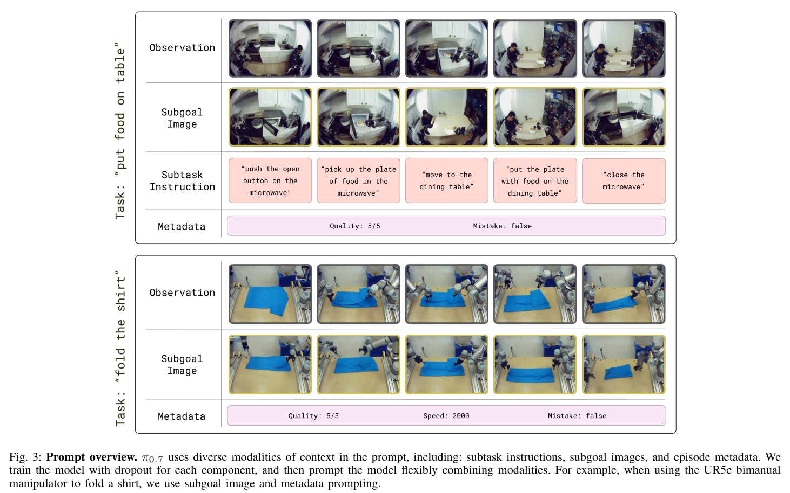
A. Training datasets
Summary: The training data includes:
multi-robot demonstrations;
autonomous evaluation data, including π*0.6 RL rollouts;
human interventions;
open-source robot datasets;
egocentric human video;
web data.
Footnote 1: autonomous data from generalization-focused evaluation tasks is excluded from training.
B. Model architecture
Summary: The model takes up to 4 cameras with 6 history frames each, plus up to 3 subgoal images, all at 448×448. It uses block-causal masking and linear state embeddings. The action expert uses adaptive RMSNorm and predicts 50-step chunks. Training-time RTC simulates delays of 0–12 steps.
C. Training with subgoal images
Summary: Real subgoal images are end-of-segment frames with probability 0.25, or frames sampled uniformly 0–4 s ahead with probability 0.75. Generated subgoals are also added to training to reduce the train-test mismatch.
VII. Prompting π0.7 at Runtime
Summary: At runtime the metadata is set as follows:
speed at the 15th percentile of episode length for the task;
quality = 5;
mistake = false.
Subgoals are refreshed whenever the subtask changes or every Δ = 4 s. Inference uses 5 denoising steps and executes \( \hat H\in\{15,25\} \) actions per chunk.
Algorithm 1 Prompting π0.7 at test time
1: Input: o_0, task instruction ℓ, metadata m, control mode c
2: Initialize subtask ℓ̂ (high-level policy or coaching)
3: g* ~ p_ψ(g* | o_0, ℓ̂, m)
4: C = {ℓ, ℓ̂, g*, m, c}
5: a_{t:t+H} ~ π_θ(a | o_{t−T:t}, C) ▷ Optional: CFG
6: for t = 0, 1, 2, ... do
7: if ℓ̂ changed or Δ-second timer elapsed then
8: g* ~ p_ψ(g* | o_t, ℓ̂, m) ▷ Non-blocking (async)
9: C = {ℓ, ℓ̂, g*, m, c}
10: end if
11: if Ĥ steps elapsed since last inference then
12: a_{t:t+H} ~ π_θ(a | o_{t−T:t}, C, a_{t:}) ▷ Async w/ RTC
13: end if
14: Execute a_t
15: end for
Summary: Classifier-free guidance is applied to the metadata with \( \beta\in\{1.3,1.7,2.2\} \).
VIII. Robot System Details
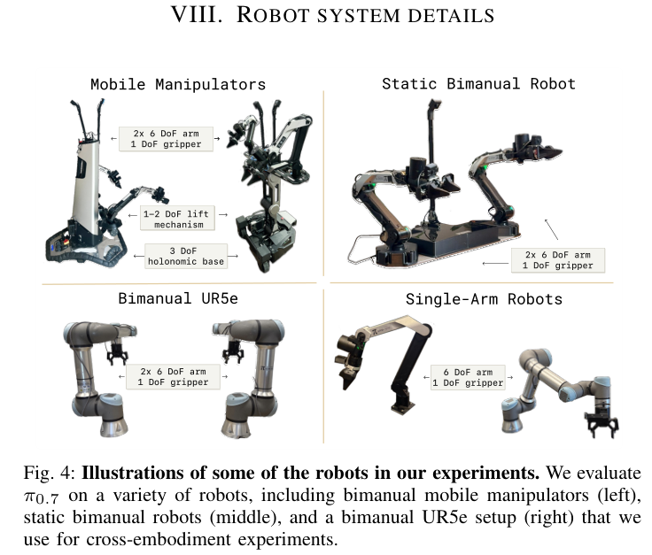
Summary: The UR5e runs at 20 Hz and the other robots at 50 Hz. All robots use parallel-jaw grippers and PD control, with inverse kinematics for end-effector commands.
IX. Experimental Evaluation
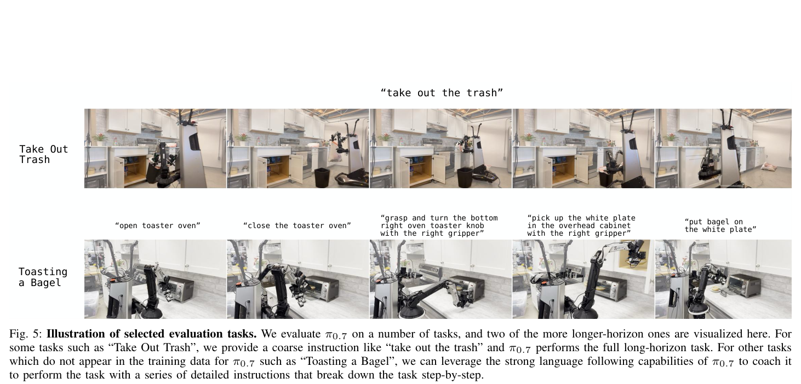
A. Out-of-the-box performance on challenging tasks
Summary: π0.7 matches RL and SFT specialists across tasks. It exceeds the RL specialists in throughput on diverse laundry and box building. Removing either the metadata or the evaluation data hurts performance.
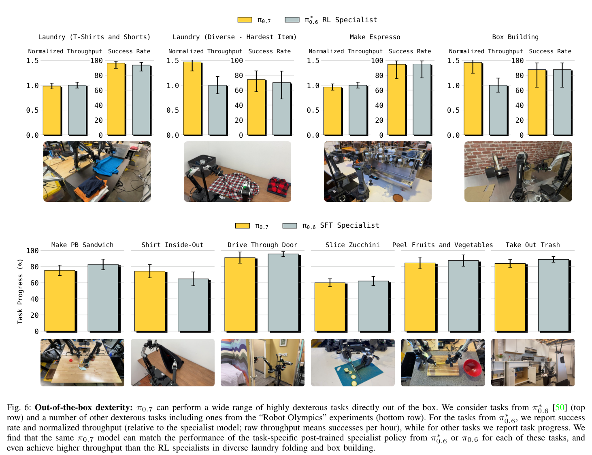
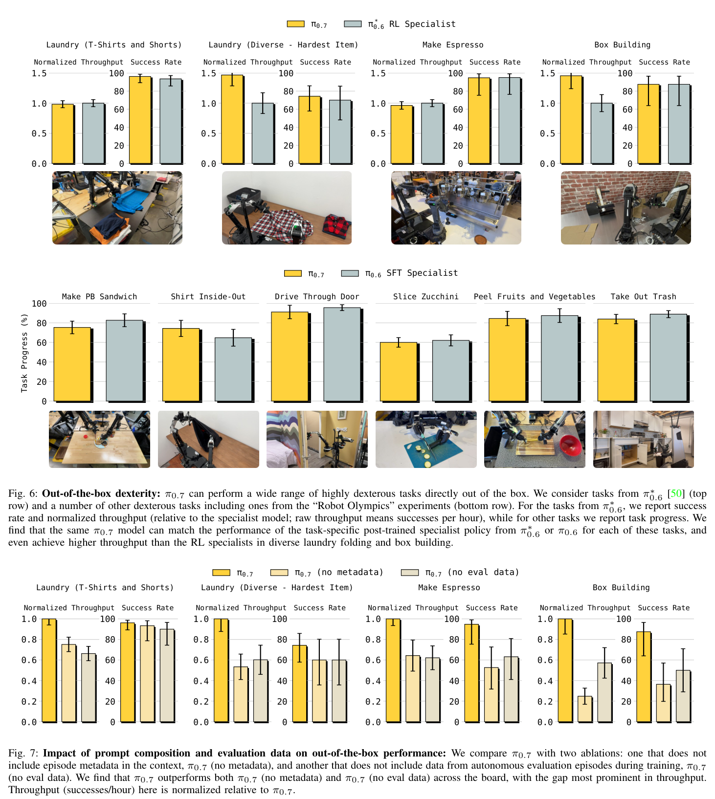
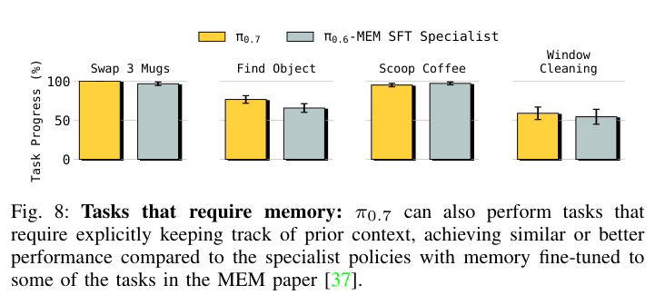
B. Instruction following
Summary: π0.7 outperforms π0.5 and π0.6 in three settings:
unseen kitchens and bedrooms;
complex referential instructions;
bias-breaking tasks such as Reverse Bussing and Reverse Fridge to Microwave.
Generated subgoals (GC) help on these tasks and are critical for Reverse Fridge to Microwave.
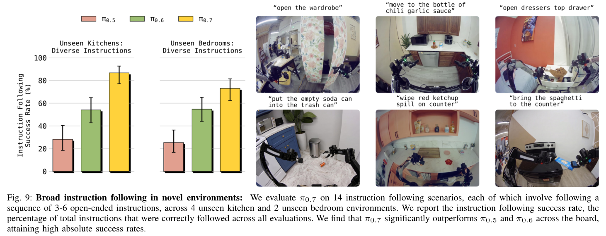
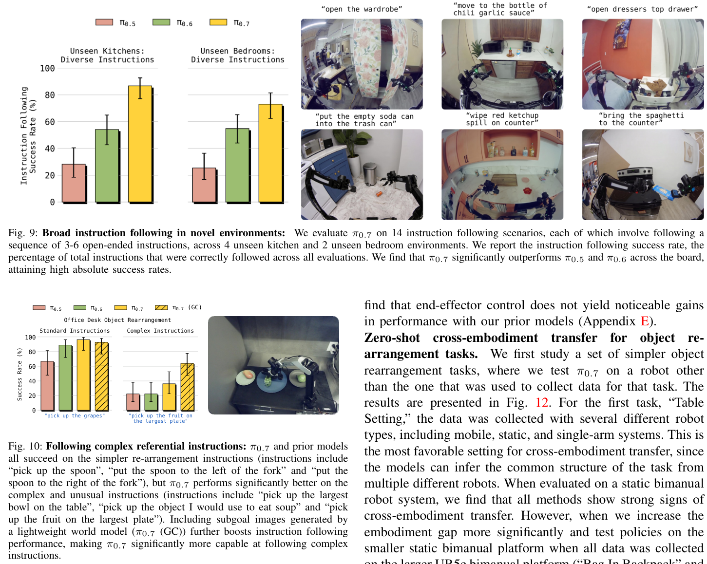
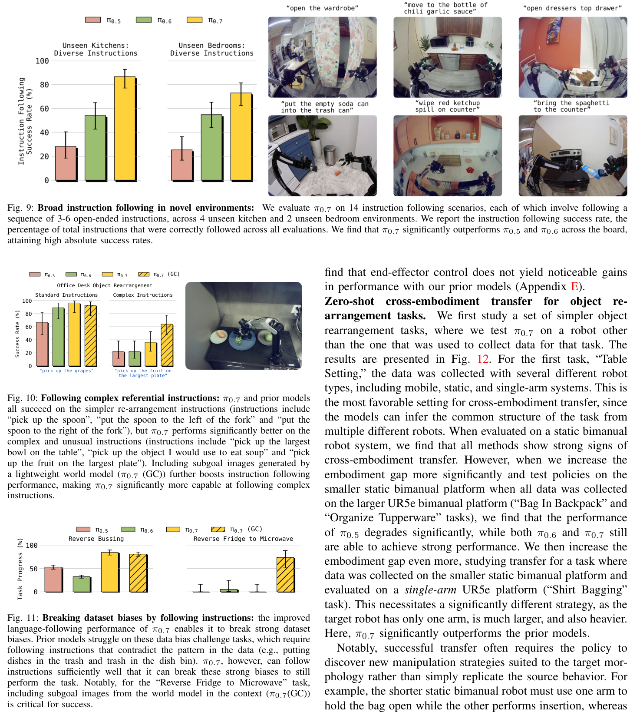
C. Cross-embodiment transfer
Summary: π0.7 transfers rearrangement and folding tasks across embodiments and adopts strategies suited to the target robot. Experts on UR5e shirt folding achieved 90.9% task progress and an 80.6% success rate. π0.7 achieved 85.6% task progress and an 80% success rate.
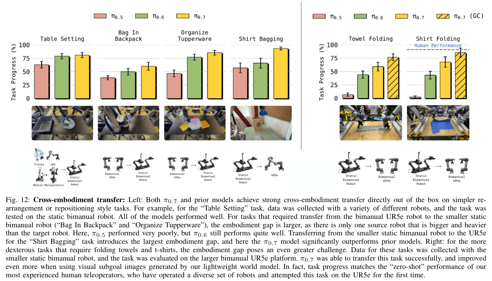
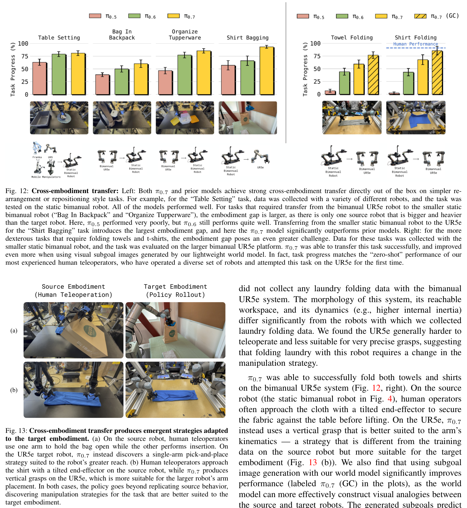
D. Compositional task generalization
Summary: π0.7 handles new short-horizon tasks zero-shot and longer tasks through language coaching. Coaching episodes can then train a high-level policy, which matches coached performance autonomously.
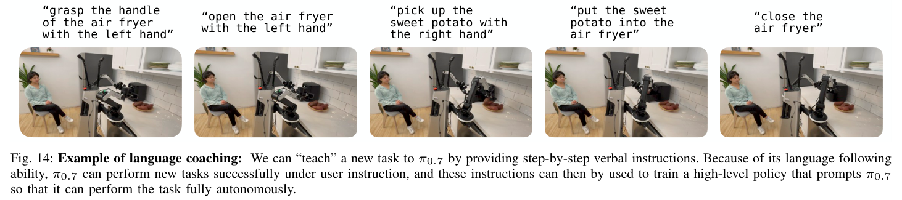
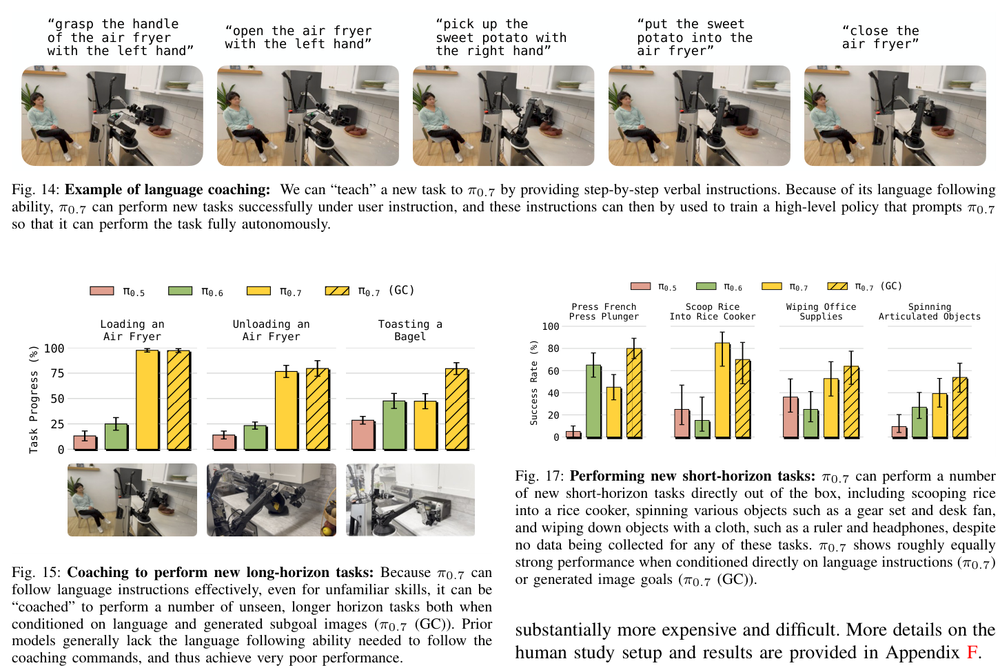
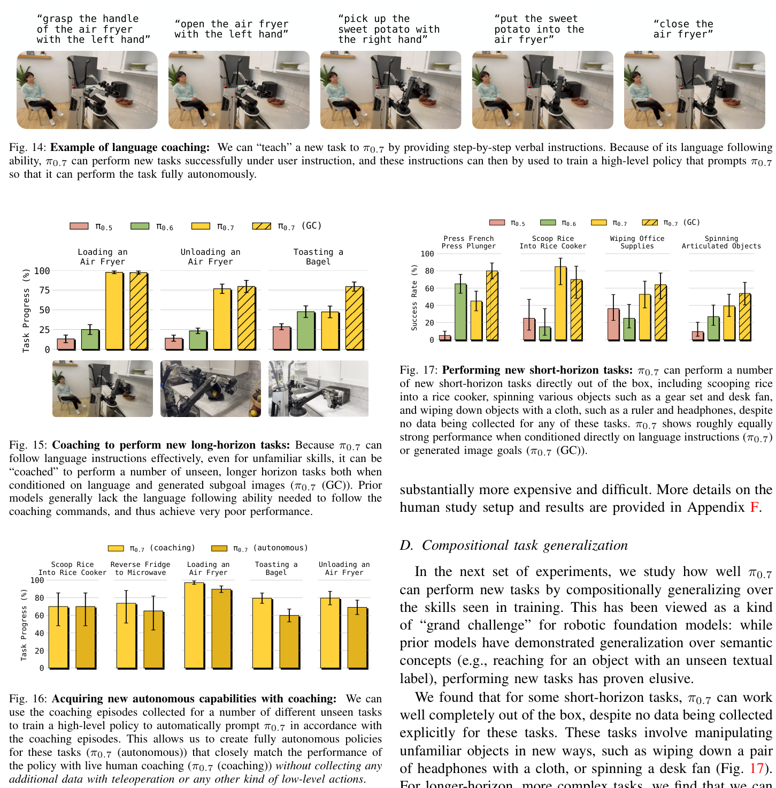
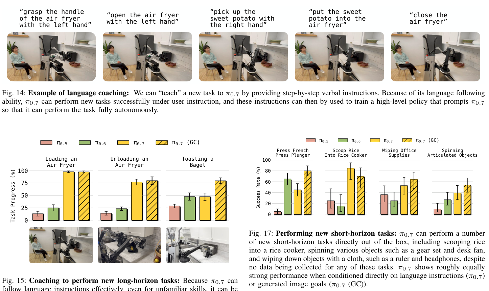
E. Can π0.7 learn effectively from diverse and mixed-quality data?
Summary: With metadata, throughput improves as more lower-quality data is added. Without metadata it degrades. Removing the most task-diverse 20% of the data hurts generalization more than removing a random 20%.
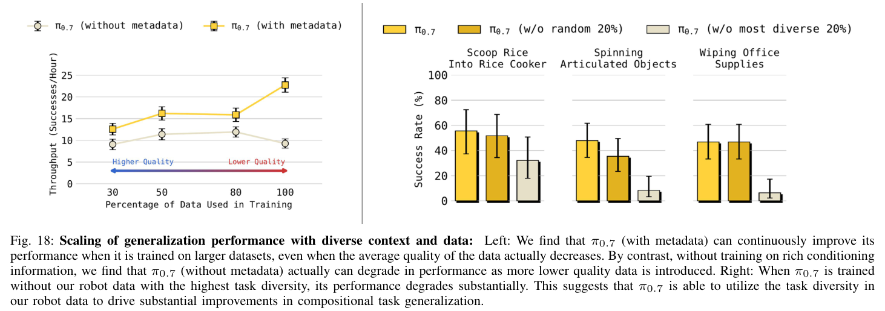
X. Discussion
Summary: Seen tasks often exceed 90% success, while unseen ones fall in the 60–80% range. The authors note that defining "unseen" is hard with very large datasets. They argue that remixing skills from training data is the essence of compositional generalization.
Acknowledgements
Summary: The authors thank robot operators and technicians.
References
Brohan et al. RT-1. arXiv:2212.06817, 2022.
Reed et al. A generalist agent. TMLR, 2022.
Octo Model Team. Octo. arXiv:2405.12213, 2024.
Liu et al. RDT-1B. ICLR, 2025.
Wang et al. Heterogeneous pre-trained transformers. NeurIPS, 2024.
TRI LBM Team. A careful examination of large behavior models. arXiv:2507.05331, 2025.
Zitkovich et al. RT-2. CoRL, 2023.
Open X-Embodiment Collaboration, 2023.
Kim et al. OpenVLA. arXiv:2406.09246, 2024.
Black et al. π0. arXiv:2410.24164, 2024.
Wen et al. TinyVLA. arXiv:2409.12514, 2024.
Zhen et al. 3D-VLA. arXiv:2403.09631, 2024.
Gemini Robotics Team. arXiv:2503.20020, 2025.
Black et al. π0.5. CoRL, 2025.
Zheng et al. X-VLA. arXiv:2510.10274, 2025.
Jiang et al. Galaxea / G0. arXiv:2509.00576, 2025.
Li et al. Vision-language foundation models as effective robot imitators. ICLR, 2024.
Li et al. CogACT. arXiv:2411.19650, 2024.
Qu et al. SpatialVLA. RSS, 2025.
Bjorck et al. GR00T N1. arXiv:2503.14734, 2025.
Zawalski et al. Embodied chain-of-thought. arXiv:2407.08693, 2024.
AgiBot-World. arXiv:2503.06669, 2025.
Zhou et al. ChatVLA. arXiv:2502.14420, 2025.
Kim et al. Cosmos Policy. ICLR, 2026.
Pai et al. mimic-video. arXiv:2512.15692, 2025.
Ye et al. World action models are zero-shot policies. arXiv:2602.15922, 2026.
Wu et al. Large-scale video generative pre-training. ICLR, 2024.
Cheang et al. GR-2. arXiv:2410.06158, 2024.
Zheng et al. TraceVLA. arXiv:2412.10345, 2024.
Sridhar et al. MemER. arXiv:2510.20328, 2025.
Shi et al. MemoryVLA. arXiv:2508.19236, 2025.
Lin et al. OneTwoVLA. arXiv:2505.11917, 2025.
Fang et al. SAM2Act. arXiv:2501.18564, 2025.
Li et al. CronusVLA. arXiv:2506.19816, 2025.
Zhang et al. TA-VLA. arXiv:2509.07962, 2025.
Jang et al. ContextVLA. arXiv:2510.04246, 2025.
Torne et al. MEM. arXiv:2603.03596, 2026.
Ahn et al. Do as I can, not as I say. CoRL, 2022.
Liang et al. Code as policies. ICRA, 2023.
Shi et al. Hi Robot. arXiv:2502.19417, 2025.
Zhao et al. CoT-VLA. CVPR, 2025.
Physical Intelligence Team. π0.6 model card, 2025.
Ye et al. Latent action pretraining from videos. arXiv:2410.11758, 2024.
Lin et al. PhysBrain. arXiv:2512.16793, 2025.
Kareer et al. Emergence of human to robot transfer in VLAs. arXiv:2512.22414, 2025.
Li et al. LatBot. arXiv:2511.23034, 2025.
Yang et al. EgoVLA. arXiv:2507.12440, 2025.
Luo et al. Being-H0.5. arXiv:2601.12993, 2026.
Zhang et al. CLAP. arXiv:2601.04061, 2026.
Physical Intelligence Team. π*0.6. arXiv:2511.14759, 2025.
Xu et al. RLDG. arXiv:2412.09858, 2024.
Xiao et al. Self-improving VLAs via residual RL. arXiv:2511.00091, 2025.
Nair et al. R3M. CoRL, 2023.
Ma et al. VIP. ICLR, 2022.
Xiao et al. Masked visual pre-training for motor control. arXiv:2203.06173, 2022.
Bhateja et al. Robotic offline RL from internet videos. arXiv:2309.13041, 2023.
Zhou et al. Manipulator-independent representations. arXiv:2103.09016, 2021.
Bharadhwaj et al. Visual affordance prediction. arXiv:2305.17783, 2023.
Chen et al. Dexterous manipulation from RGB human videos. arXiv:2602.09013, 2026.
Shaw et al. VideoDex. CoRL, 2023.
Bharadhwaj et al. Zero-shot robot manipulation from passive human videos. arXiv:2302.02011, 2023.
Bahl et al. Human-to-robot imitation in the wild. arXiv:2207.09450, 2022.
Bahl et al. Affordances from human videos. CVPR, 2023.
Kareer et al. EgoMimic. ICRA, 2025.
Shi et al. Adaptive dexterous grasping from single demonstrations. IROS, 2025.
Bharadhwaj et al. Track2Act. ECCV, 2024.
Vecerik et al. RoboTAP. ICRA, 2024.
Wen et al. Any-point trajectory modeling. arXiv:2401.00025, 2023.
Gu et al. RT-Trajectory. ICLR, 2024.
Kapelyukh et al. DALL-E-Bot. RA-L, 2023.
Mandi et al. CACTI. arXiv:2212.05711, 2022.
Chen et al. GenAug. arXiv:2302.06671, 2023.
Yu et al. Semantically imagined experience. arXiv:2302.11550, 2023.
Stone et al. Open-world object manipulation. arXiv:2303.00905, 2023.
Yang et al. Data analogies. arXiv:2603.06450, 2026.
Doshi et al. Scaling cross-embodied learning. CoRL, 2024.
Yang et al. Pushing the limits of cross-embodiment learning. arXiv:2402.19432, 2024.
Zha et al. LAP. arXiv:2602.10556, 2026.
Grover et al. Preserving pretrained representations. arXiv:2509.11417, 2025.
Ai et al. Embodiment scaling laws in locomotion. CoRL, 2025.
He et al. Scaling cross-embodiment world models. arXiv:2511.01177, 2025.
Chi et al. UMI. RSS, 2024.
Young et al. Visual imitation made easy. CoRL, 2021.
Pathak et al. Zero-shot visual imitation. CVPRW, 2018.
Chebotar et al. Actionable models. ICML, 2021.
Bousmalis et al. RoboCat. arXiv:2306.11706, 2023.
Myers et al. Goal representations for instruction following. CoRL, 2023.
Nair et al. Visual RL with imagined goals. NeurIPS, 2018.
Nair and Finn. Hierarchical foresight. ICLR, 2020.
Black et al. SuSIE. arXiv:2310.10639, 2023.
Ko et al. Learning to act from actionless videos. ICLR, 2024.
Kim et al. UniSkill. CoRL, 2025.
Liang et al. Dreamitate. CoRL, 2025.
Zhang et al. ForeAct. arXiv:2602.12322, 2026.
Du et al. Video language planning. ICLR, 2024.
Liang et al. Video generators are robot policies. arXiv:2508.00795, 2025.
Yuan et al. Fast-WAM. arXiv:2603.16666, 2026.
Du et al. Universal policies via text-guided video generation. NeurIPS, 2023.
Lipman et al. Flow matching. arXiv:2210.02747, 2022.
Driess et al. Knowledge insulating VLAs. NeurIPS, 2025.
Pertsch et al. FAST. RSS, 2025.
Deng et al. BAGEL. arXiv:2505.14683, 2025.
Gemma Team. Gemma 3 technical report, 2025.
Black et al. Real-time action chunking. arXiv:2506.07339, 2025.
Black et al. Training-time action conditioning for RTC. arXiv:2512.05964, 2025.
Ho and Salimans. Classifier-free guidance. arXiv:2207.12598, 2022.
Hejna et al. Robot data curation. arXiv:2502.08623, 2025.
Li et al. GR-RL. arXiv:2512.01801, 2025.
Zhang et al. SageAttention. arXiv:2410.02367, 2024.
Appendix
A. Contributions
Summary: Contributors are grouped into the following areas:
data collection and operations;
annotation;
policy training and research;
policy infrastructure;
robot hardware;
robot infrastructure;
writing and illustration.
B. Attention pattern
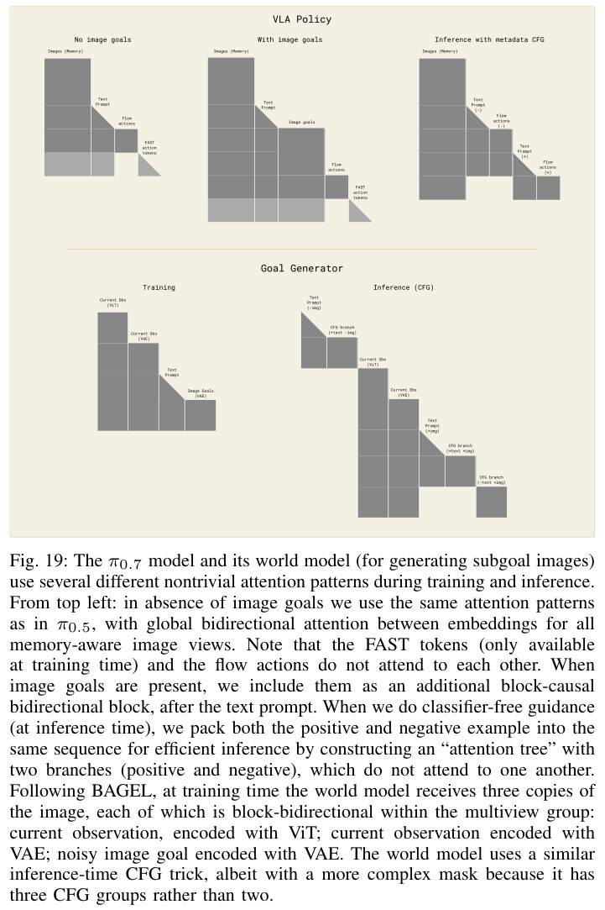
C. Training of the world model
Summary: The world model follows the BAGEL recipe:
Data: high-quality labelled robot and egocentric data, plus open-source image-editing and video data.
Encoders: ViT inputs at 448×336 and VAE inputs at 512×384.
Backbones: 7B LLM and 7B generation backbones.
Subgoals are regenerated every Δ = 4 s.
D. Inference speed and optimization
Summary: On one H100, VLA inference takes 38 ms in the minimal configuration and 127 ms in the worst case. Subgoal generation takes 1.25 s for 25 steps on 4×H100, using tensor parallelism, 8-bit matmuls and SageAttention.
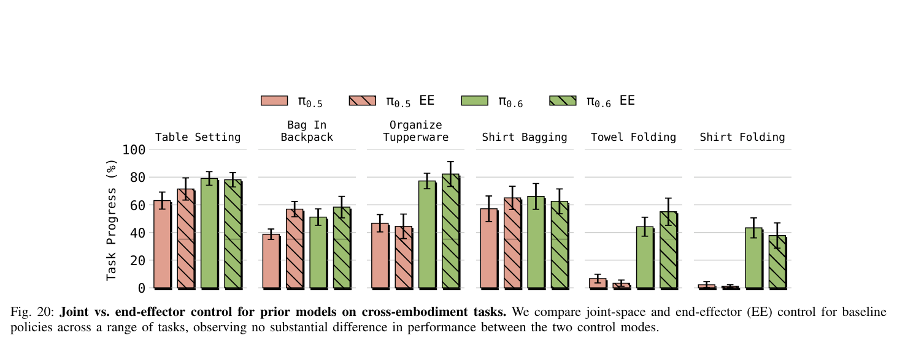
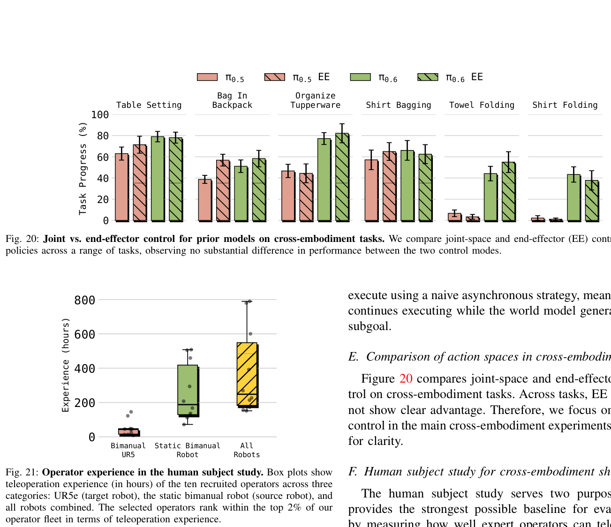
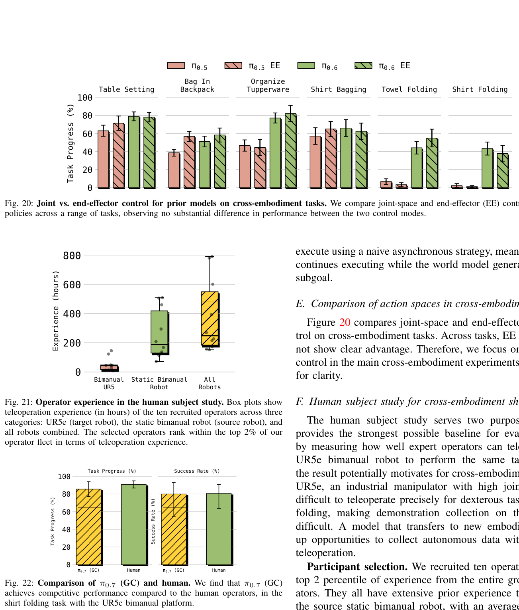
E. Comparison of action spaces in cross-embodiment transfer
Summary: End-effector control shows no clear advantage, so the main experiments use joint-space control.
F. Human subject study for cross-embodiment shirt folding
Summary: Ten expert operators with no UR5e folding experience did 3 trials each, with no practice. Humans achieved 90.9% task progress and an 80.6% success rate; π0.7 achieved 85.6% and 80%.